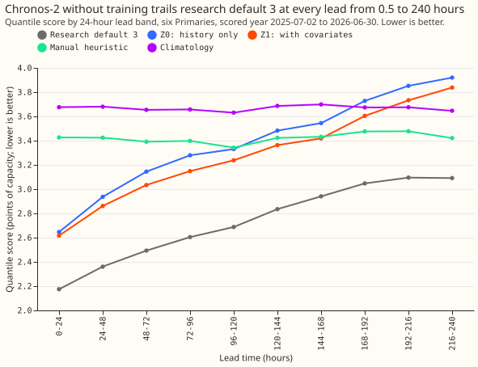
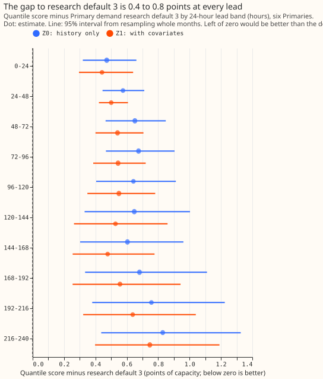
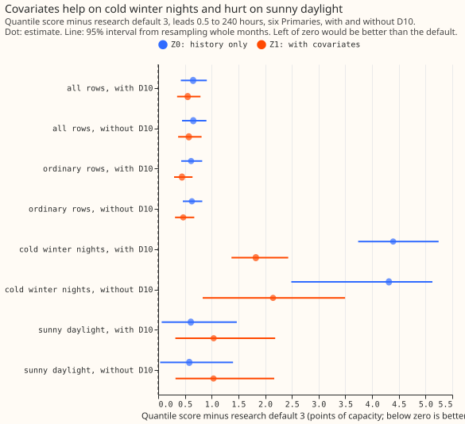

Does a pre-trained time-series foundation model, used without training, forecast Primary demand as well as Primary demand research default 3?
Take-home: A pre-trained foundation model, Chronos-2, forecasts the demand of six Primary substations clearly worse than Primary demand research default 3 (called "the default" below), at every lead time from 0.5 to 240 hours (10 days). A lead time is how far ahead of the forecast time a half-hour lies. Scores are quantile scores in percentage points of each substation's effective capacity, and lower is better. Chronos-2 given only each substation's own history (Z0) scores 0.65 points worse than the default (95% interval +0.42 to +0.91). With extra inputs known in advance, called covariates (Z1), it scores 0.55 points worse (+0.35 to +0.79), so the covariates close about one sixth of the gap (0.65 down to 0.55 points). They help on cold winter nights and make sunny daylight worse. The 0.5 to 240 hour range is the 1 to 10 day horizon that National Grid Electricity Distribution (NGED) needs.
We tested whether a foundation model that never saw our data can match the default. The foundation model is a neural network pre-trained on a large collection of unrelated time series. Chronos-2 (Ansari et al., 2025) is published under the Apache-2.0 licence with 120 million parameters, and we ran it without fine-tuning. We ran two arms: Z0 uses the substation's own history only, and Z1 adds five covariates (the ensemble-mean temperature forecast, the sun's elevation, the local half-hour of the day, the day of the week, and a bank-holiday flag). At each 09:00 UTC forecast time, Chronos-2 saw the 8 weeks of readings that had arrived by then (the newest ended 3.5 hours earlier) and forecast the next 10 days at 11 quantile levels. The six Primaries are called D5, D9, D10, D11, D14, and D16 below. The default is the convex stack of experiments 251 and 322, which supply the rows, the metric, and the stored forecasts of the default. The manual heuristic is a rule that mimics NGED's manual forecast, and climatology is the typical demand for the same month, half-hour, and day type.
| Arm | Quantile score, 0.5 to 240 hours |
|---|---|
| Default | 2.733 |
| Z0 (history only) | 3.387 |
| Z1 (with covariates) | 3.286 |
| Manual heuristic | 3.421 |
| Climatology | 3.668 |
Figures 1 to 3 show the score by lead band, the gap to the default by lead band, and the gap by group of half-hours.



Results
- Every arm trails the default, and the reproduction gate passed. The scored year has 788,004 rows at six Primaries (2025-07-02 to 2026-06-30, 09:00 UTC forecast times, rows outside the hand-filtered events). Rebuilt from stored files, the default scores 2.733 at 0.5 to 240 hours and 3.078 at 168 to 240 hours, against 2.727 and 3.077 in experiment 322, within the 0.01 tolerance.
- Z0 trails the default by 0.653 points (95% interval +0.423 to +0.909; without D10 +0.657, +0.445 to +0.903). The first half of prediction P1 holds, because the gap exceeds 0.50.
- Z0 beats the manual heuristic at short leads only. The differences are -0.78 at 0 to 24 hours, -0.49 at 24 to 48 hours, and -0.25 at 48 to 72 hours, all with intervals below zero. At 72 to 96 hours the difference is -0.12 (interval -0.29 to +0.03). Z0 is level with the heuristic from 96 to 144 hours (-0.01 and +0.06 points) and trails it clearly from 144 hours (+0.11 at 144 to 168 hours, +0.50 at 216 to 240 hours). The second half of P1 fails, because it predicted that Z0 trails the heuristic beyond 48 hours.
- A likely reason is that Z0 sees the recent demand level and the manual heuristic does not, so Z0's advantage fades as the lead grows. The lead trend fits this explanation, and we did not test it further.
- Z1 trails the default by 0.552 points (95% interval +0.354 to +0.791; without D10 +0.573, +0.374 to +0.812). Prediction P2 fails: Z1 closes 16% of the Z0 gap at 24 to 120 hours (+0.636 for Z0, +0.534 for Z1), against the predicted half. Prediction P3 holds, because the smallest gap in any 24-hour band is +0.44 (Z1, 0 to 24 hours), far above 0.03.
- We cannot say Z1 is better than Z0 overall. Z1 minus Z0 is -0.101 (-0.294 to +0.040). The sign differs by group (figure 3): cold winter nights -2.57 (-3.30 to -1.31), all other half-hours -0.17 (-0.36 to -0.02), sunny daylight +0.43 (+0.21 to +0.76).
- Groups scored separately because they matter to NGED, Z0 and Z1 against the default (0.5 to 240 hours): cold winter nights +4.39 and +1.83, sunny daylight +0.61 and +1.04, all other half-hours +0.62 and +0.45. On cold winter nights the scores are 2.77 for the default, 7.16 for Z0, 4.59 for Z1, and 6.63 for the manual heuristic.
- Z0 and Z1 are worse than the default in both tails. Pinball loss at the 1st-percentile quantile is 0.188 for the default and 0.226 for both arms. At the 99th percentile it is 0.220 for the default, 0.270 for Z0, and 0.240 for Z1. Coverage at the 1st percentile is 1.5% for the default, 0.9% for Z0, and 1.6% for Z1, and at the 99th percentile 98.4%, 98.6%, and 98.8%. Threshold-weighted CRPS (at each Primary's own 90th-percentile demand) is 0.306, 0.420, and 0.395.
- Quantile score by 24-hour lead band (default, Z0, Z1): 0 to 24 hours 2.175, 2.647, 2.616; 96 to 120 hours 2.688, 3.330, 3.238; 216 to 240 hours 3.091, 3.920, 3.838.
- Z2 (a fine-tune of a few training steps) did not run. Its rule needed Z1 within 0.30 points of the default in some 24-hour band, and the smallest gap is 0.44. The second stop rule did not fire either, because both arms beat the manual heuristic by a wide margin at 0 to 24 hours.
- How a reader could explain one forecast: a Z0 forecast is a function of the previous 8 weeks of readings through a transformer neural network with 120 million parameters, so no input can be named. Z1 adds five named covariates, but their effect is not separable. A forecast from the generalised additive model (GAM) in the default has one named term per input, such as temperature, the sun's elevation, and the calendar, and each term can be read as a curve.
Checks
- Median minus mean forecast: no information. Chronos-2 returns its median as its mean, so the difference is exactly 0.00 at every Primary. The mean absolute error of the median forecast is 6.02 percentage points of capacity for Z0, 5.86 for Z1, and 4.77 for the default, the same ranking as the quantile score.
- Quantile score per Primary (default, Z0, Z1): D5 3.52, 4.10, 4.06; D9 2.50, 3.10, 2.80; D10 3.41, 4.04, 3.86; D11 2.41, 3.33, 3.38; D14 2.09, 2.69, 2.62; D16 2.57, 3.13, 3.08. Z0 and Z1 both trail the default at all six Primaries.
- Audit triggers: none fired on a headline contrast. The audit rule tests seven conditions, such as a failed control, a result that contradicts its own prediction, a gap that changes sign when one Primary is left out, and a nested arm that beats the arm containing it. The one near miss is the second half of P1, where Z0 beats the manual heuristic out to 72 hours; the lead trend is consistent with the explanation above, and the gap to the default does not depend on it. Leaving out any one Primary keeps both gaps above +0.4. Z1's overall gain over Z0 is not established, and Z1 is worse than Z0 on sunny daylight; the page reports that split as a result.
Caveats and what to try next
- Z1 holds the last temperature of a truncated weather run. Where a numerical weather prediction run ends before 240 hours, Z1 repeats that run's last temperature, because a later run is not known at forecast time.
- The covariates are weaker than the default's weather inputs. The temperature covariate is the ensemble-mean 24-hour mean temperature, and for past half-hours it comes from the weather run with the shortest lead. Both are available at forecast time. The sun's elevation is computed from the date and location. Neither the temperature nor the elevation carries cloud, so Z1's solar input is weaker than the default's.
- One foundation model and one context length: Chronos-2 with 8 weeks of context and its default quantile outputs. TimesFM, Moirai, and Toto were not run, because Chronos-2 alone accepts the covariates that Z1 needs.
- Next: score a foundation-model forecast alone against the default, on cold winter nights and on sunny daylight as well as overall, before using it as a blend member, and test a solar input that includes cloud cover.
Plan
The plan below was fixed before any score was read.
Foundation-model choice
- Chronos-2 (
amazon/chronos-2): Apache-2.0 licence, 478 MB of weights, accepts covariates. - Not run: TimesFM, Moirai, and Toto, which would have repeated Z0 without giving Z1.
The five plan items
- Question. How far behind research default 3 is a zero-shot foundation model, by lead band?
- Prediction that can fail. P1 to P3 in the front matter.
- Rows and period.
fold_a_daily_gap_v1, six Primaries, scored year 2025-07-02 to 2026-06-30, 09:00 UTC forecast times, all rows except those in hand-filtered events. - Metric. The quantile score over 11 levels in percentage points of effective capacity.
- Stop rule. In the front matter.
Arms
- Z0: history only; the context is 2688 half-hours ending 3.5 hours before the forecast time.
- Z1: Z0 plus the ensemble-mean 24-hour temperature, the sun's elevation, the local half-hour of day, the day of week, and a bank-holiday flag, all known at forecast time.
- Z2: only if the rule in the front matter holds; it did not.
- References: the default, the manual heuristic, and climatology.